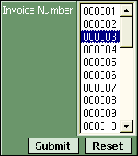
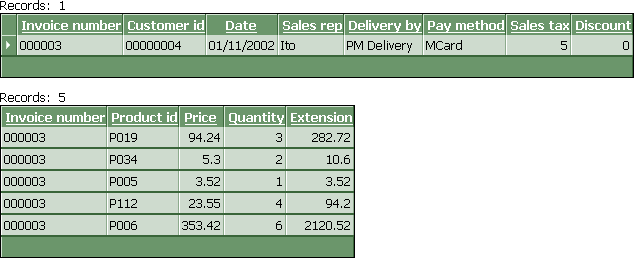

Using Session Variables to Filter a GridLinker
By default a gridlinker displays all of the records of the underlying grid components. To filter a grid (typically the primary grid) in a gridlinker, follow this procedure.
Assume you have a gridlinker that links the OrderHeader table (parent) to the OrderItems table (child), and you want to filter the OrderHeader grid so that invoice_number = session.invoice_number.
Open the gridlinker from the Web Projects Control Panel.
Select the grid whose filter you want to override (the top grid in this case).
Click the Edit button to display the Edit Properties dialog.
Click the Override Settings button to display the Override Properties dialog.
Since the invoice_number field links the two grids, you want to enter the following code in the dialog:
|
if eval_valid("pgrid.session.invoice_number") then dbf.filter = "invoice_number
= " + quote(pgrid.session.invoice_number) |
Note : In a future version of Alpha Five, the need for the pgrid. prefix in pgrid.session.invoice_number will be eliminated.
Click OK > OK to return to the GridLinker Builder.
Click Save and Close to return to the Web Projects Control Panel.
Place the gridlinker component on a page (in this example named orders.a5w ).
Testing the Changes
Publish the grid components.
Place the gridlinker component on a page and publish it.
Create a dialog component with a single drop down list control.
Set the DropDownBox Properties > Choices field to display a dynamic list of invoice_number values from the Invoice_Header table.
Display the Form > Properties page.
Click
 in the Server Events > AfterValidate
field to display the Form Events dialog.
in the Server Events > AfterValidate
field to display the Form Events dialog.Enter the following code and click OK.
|
session.invoice_number = invoice_number currentform.redirecttarget = "orders.a5w" |
Place the dialog component on a page and publish the page (in this case named Pick_Invoice_Number.a5w ).
When you select an invoice number and click Submit, the orders.a5w page will appear.

After selecting an invoice number on the Pick_Invoice_Number.a5w page and clicking Submit...

...the orders.a5w page containing the filtered gridlinker appears.
See Also
Using a Session Variable in a Component
Limitations
Web publishing applications only.